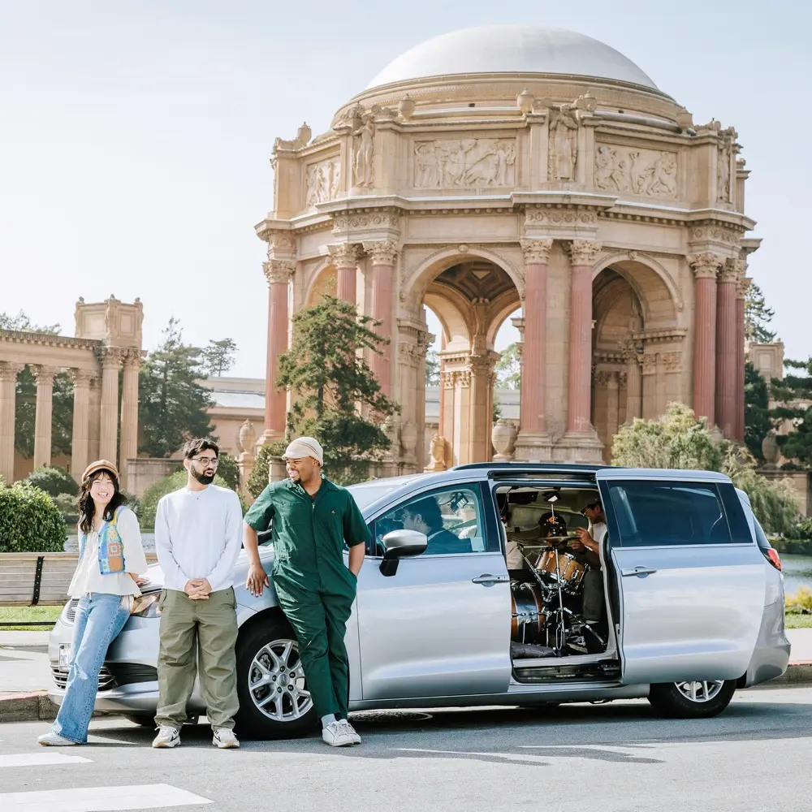

Album#27
Band In A Van: Bay Area Rising Live Studio
{kind=link}

专辑信息
- 专辑名称：Band In A Van: Bay Area Rising Live Studio
- 歌手：RYCE / The Guest Room / Adison Maxwell / Bay Area Rising
- 年份：2025-05-19
- 风格：流行
- 时长：约 38 分钟
每日推荐里听到了 everyday - live in a van (feat. Chevy & Bay Area Rising) (MV)，蛮好听的，就顺便把专辑听了一遍，整体都不错。
正如专辑名字里写的「Band In A Van」，这是他们在面包车上进行的一场 Live，比较即兴。
几个人挤在面包车里，面包车一路行驶，而他们则在车里开心地唱歌，听起来很 Chill，让人感到放松，就像在自驾旅途中一般，心情是悠扬的。
everyday 是专辑里我最喜欢的一首，喜欢 Chevy 的声音。
歌词
change
Come spin me around
With no hesitation
When I'm in the lost crowd
Take my reservations
I could say that I'm fine
The look on my face
Shows what's going on inside
I can't let this slide
All this push pull
With no ease
29 missed calls
With no peace
How I could move on
And still love you
At the same time
When I'm weak
Lean on my Spirit for guidance
This mountain I'm climbing
Ain't easy when I'm on your couch
I need like 25 minutes
With no interruption
This not an argument
This a discussion
The center stage
The final time you played with me
I couldn't let you get away
I keep falling to my knees and histories
Like did you ever really change
Hey hey hey hey he he hey hey
Hey hey hey hey
Did you ever really change
Hey hey hey hey he he hey hey
Hey hey hey hey
Did you ever really
Wiping off all the memories
Cold and warm had me on a leash
My neck tight losing breath now
Pray to God for a slow down
Cuz every time when I shut you out
I keep that door lil open
A part of me still is hoping
You walk in a new person
Oooo oooo
These rose tint
Shades never numb
What you
Dooo oooo
I bleed dry
In these blurred lines
And you knew this
If I turn round
For the one time
Will we get it right?
Ride with the wind
Finding the pace
Like
Center stage
The final time you played with me
I couldn't let you get away
I keep falling to my knees
And histories
Like did you ever really change
Hey hey hey hey he he hey hey
Hey hey hey hey
Did you ever really change
Hey hey hey hey he he hey hey
Hey hey hey hey
Did you ever really change
2024
Bones out the closet
Feet by the shore
Tell me that you want me
I know it hurts
Between you and me
I hope we work
peacefully
You act so insecure
I'm in my head and I'm out your life
I overthink about it, over stress
And I'm under plight
Tell me why you run
I hate the way your friends stare
The battles just begun
I'm moving on and you're unaware
Peacefully
Darling don't wait on me, mm, mm
Peacefully
Darling don't wait on me, yeah yeah
Peacefully
Darling don't wait on me, mm, mm
Peacefully
Darling don't wait on me, yeah yeah
You let your down hair for other guys
I was a stepping stone for your life
I tell my mama all about our dates
I'm sad it еnded fast and ran away
Peacefully
Darling don't wait on mе
Peacefully
Darling don't wait on me
Peacefully
Darling don't wait on me, mm, mm
Peacefully
Darling don't wait on me, yeah yeah
Don't wait, don't wait, don't wait
Don't wait, don't wait, don't wait
Yeah, yeah, yeah
Don't wait on me
Don't wait on me
peace
[Verse 1]
Please darling
You won't catch me down weak falling
I wanna stay on my feet always
I'm not into this roleplay
Board games
Peace darling
I got sum down deep for me
It feels good to be free often
And I'm keeping this moment
Showing I'm
[Chorus]
Too far to kiss you
I'll push you out my head
We had our issues but
I take back what I said
I let you fool me once
Two times this love is dead
Oh oh oh
Time to let you go go
Like forever
[Verse 2]
Please darling
Only wanna breathe
Find the some time to be me
Its been way too long
Since I've looked in the mirror
Been stuck on you
Cracked frame
With a picturе
I need to wait
I ain't taking no chance
On something half of the purposе
I take what's right
Something to build instead what's burning
I been too hurt
Pushed down
And left to the curb its
A lot of work
Healing and finally
Being you first
You might also like
HEAT
Ryce
Lately
Forrest Frank, Biskwiq & Ryce
Creep
Radiohead
[Chorus]
Too far to kiss you
I'll push you out my head
We had our issues but
I take back what I said
I let you fool me once
Two times this love is dead
Oh oh oh
Time to let you go go
Like forever
knowuright
Darling
Sun
Shine I really wanna know you right
Tell me
If you
Wanna go and catch a vibe tonight
All this up and down has got me crazy
Ever since you walked into my life
I just wanna know what's on your mental
Fall into the rhythm of your mind
I don't wanna cause you any issue
I think of every time that I've been with you
And it's not enough
I'm tryna find a way to you
And maybe fall in love
Darling
Sun
Shine I really wanna know you right
Tell me
If you
Wanna go and catch a vibe tonight
Darling
Sun
Shine I really wanna know you right
Tell me
If you
Wanna go and catch a vibe tonight
And how I feel
Is morphing into better days
I can't deny
No one else could make me feel this way
You're something new
Pulling me to situations
That I ain't never been before
You're teaching me to have some patience
I wanna feel what's inside
Tell me can I have your time
Walking on every lil crevice
Outside your soul
Keep on teasing me I'm
Needin your quality
Pulling me under
Your taste
Need it like every day
Catch it and stride
I wanna follow the light
I wanna feel what's inside
Tell me can I have your time
Walking on every lil crevice
Outside your soul
Keep on teasing me I'm
Needin your quality
Pulling me under
Your taste
Need it like every day
Catch it and stride
I wanna follow the light
Ohhh
I wanna follow the light
Ohhh
I wanna follow the light! (light light light light light)
Ohhh
I wanna follow the light
Ohhh
I wanna follow the light!
Darling
Sun
Shine I really wanna know you right
Tell me
If you
Wanna go and catch a vibe tonight
Darling
Sun
Shine I really wanna know you right
Tell me
If you
Wanna go and catch a vibe tonight
Sun
Shine I really wanna
Oooh yeah I really wanna
Oooh yeah I really wanna
Ooooh
external
I got memories with vacant
Seeds have been sprouted inside these mountain signs of you and me
Began to breathe
A better piece of who I'm made to be
I'm made to live
I'm made to give
I'm made to finally reap a profit from the womb
Like Jeremiah, set apart
The Lord unto, took my wickedness into a pure heart
Defying gravity, like Indiana
To be a star but never rose
No pharaoh, foe or evil kills the arts
It's infinite, eternal
I'm going to live where you're going to live
Forever
Trust in the vision
We're going to live forever
It goes on and on
Yeah, it goes on and on
Well, yeah, all and all, yeah
I need time to speak when I'm feeling lost inside this whole week
Look to the cross and tell my old friends the story ends
I'm replete with a P.V., open door with the golden hinges
Whole floor transparent, whole city
Like part of my pictures, Hollywood couldn't paint this image
Run free like Word, like jelly on bread
And I got me the perfect bed with it, holy with the Spirit
See me up in the mirror, I'm a this, baby
My faith in Him is how I'm living
I know I'm going to live
We're going to live forever
Trust in the vision
We're going to live forever
It goes on and on
Yeah, it goes on and on
Well, yeah, on and on, yeah
We're going to live this for like 80 degrees
I turn on my drums and roll up the sleeves
This for my mama too, this is for my father and brother
Like kind of the blessings like this passing over the roof
My body's renewed, my eyes be looking at Your resurrection
Pro second coming, in my mind
I'm a rescuee here, Jesus on my life
From the dark of Jerusalem to the true light carrying the new
I'm going to—we're going to live forever
Trust in the vision, we're going to live forever
Goes on and on
Yeah, it goes on and on
Well, yeah, on and on
Yeah, well, going to live forever
Going to live, yeah
Going to live forever
take your time
[Verse]
Take your time
I want you to be comfortable
Do you feel alright?
You are shining bright
Your smile is incomparable
On this starry night
On this starry night now
[Chorus]
I just want to see how
All this could go down
What are the odds of you and I
I’m tryna stay calm now
I’m honestly so down
For having the chance to call you mine
You’re on my mind
You’re on my mind
[Verse]
Take your time
I’d love to be the one you want
On a Friday night
When everything is said and done
Am I seeing right?
You’ve wrapped yourself around my lungs
And you’re holding tight
And you’re holding tight now
[Chorus]
I just want to see how
All this could go down
What are the odds of you and I
I’m tryna stay calm now
I’m honestly so down
For having the chance to call you mine
You’re on my mind
breathe
Be loud about your crying
Gotta let it out
I see the world around you lying
To try and slow you down
But why not think about it
Feel so close
To all you want
All you want and need
If all you want is me
You gotta
Be loud about your worries
And say the way you feel
This life will have you hurried
To run from what is real
But don't lose sleep about it
Feel so close to
All you want
All you want and need
If all you want is me
You gotta
Breathe (oh oh oh), wait for me
I see it (oh oh oh ), do you believe it
Breathe (oh oh oh), wait for me
All you want
All you want and need (oh oh oh)
If all you want is me
You gotta
All you want
And all you need
I promise
It will come
And it's all for free
If you wanna walk along
This path with me
I'll show you
What is meant to be
And in our biggest fantasy
Its you and me
Its you and me
Ohhhh I swear its just finally
Somewhere right in between
You'll bring it around
Right up and down
Into vision please
And tell 'em one more time
For me
Yeah
Breathe (oh oh oh), wait for me
I see it (oh oh oh), do you believe it
Breathe (oh oh oh), wait for me
All you want
All you want and need (oh oh oh)
If all you want is me
You gotta
This moment with you
I feel the Lord's peace
I love you girl
I love you girl
Let's cut out the noise
And let the truth speak
What we have is real
We have is real
Baby
This moment with you
I feel the Lord's peace
I love you girl
I love you girl
Let's cut out the noise
And let the truth speak
What we have is real
We have is real
Baby
Breathe (oh oh oh), wait for me
I see it (oh oh oh), do you believe it
Breathe (oh oh oh), wait for me
All you want
All you want and need (oh oh oh)
If all you want is me
You gotta
All you want and need (oh oh oh)
If all you want is me
All you want
All you want (oh oh oh)
If all you want is me
You gotta
real love
[Verse]
Tell me how's your day?
From the morning the times you're faraway
I'll be hoping that maybe things will change
I'll hold you close in my mind by the end of the night
Got me up late you're pulling on my heartstrings
Your warm face engulfs me like it's Pompeii
I'm so phased turning on the insides
Talking for months through the phone ain't enough
I want
[Chorus]
Real love
Something for a long time
Please love
Come over sometime
I need you
Caught up in the moment like
This could be the way we run life
Real love
Something for a long time
Please love
Come over sometime
I need you
Caught up in the moment like
This could be the way we run life
[Verse]
You're too faraway
It's making my heart ache
When I look into your eyes feel like I'm stargazing
Your face is my sun all the light I need
I hate that I don't have you right by me
Baby I need you
Te necesito
Si y te quiero, I just really wanna see you
No I can't bear it every time I have to go
So I'm making sure I cherish all the time I have with you
Till we close like
[Chorus]
Real love
Something for a long time
Please love
Come over sometime
I need you
Caught up in the moment like
This could be the way we run life
Real love
Something for a long time
Please love
Come over sometime
I need you
Caught up in the moment like
This could be the way we run life
[Outro]
This could be the way we run life
Oooh-Ayyy
Baby I need you, te necesito
Si y te quiero I just really wanna see you
Oooh-Woah-Ayyy
Baby I need you, te necesito
Si y te quiero I just really wanna see you again
She's so cool
She's so so so cool
Oh my frickin frick hahahaha
cruise
[Chorus]
We ain't gotta roll right now, let's cruise
I know this situation's hella new
Said we ain't gotta roll right now, let's cruise
Said everything is different
When I'm with you
[Verse]
One time for my homegirl
Two times for my homeboy
We stay winning right
And one time for my city
We count fives, count fifties
We stay living right
Baby, you're my best friend
Know I'm never leaving
I'ma give you what you needin'
Loving and affection
We that happy ending
[Chorus]
We ain't gotta roll right now, let's cruise
I know this situation's hella new
Said we ain't gotta roll right now, let's cruisе
Said everything is different
When I'm with you
You might also like
Lately
Forrest Frank, Biskwiq & Ryce
WHERE IS MY HUSBAND!
RAYE
I Just Might
Bruno Mars
[Verse]
Sweet as vanilla essence
A saint sent from the heavens
Who's presence is something precious
A blessing that has me second guessing all emotions
Got me coasting a smooth ride cruising through the ocean
Loving your brown eyes you move and sooth my mind
I loose my stress and choose to take my time
To note all your flaws, your
Pros and cons, what
Turns you off, what
Turns you on, yeah
[Chorus]
We ain't gotta roll right now, let's cruise
I know this situation's hella new
Said we ain't gotta roll right now, let's cruise
Said everything is different
When I'm with you
say yes
[Verse]
Ima sit by the place where I'm supposed to be
If she's the one or it's meant to be
Ima chill Ima chill
Cause the vibe kinda nice kinda heavenly
If the timing is right ima take a leap
Ima chill
Can I keep it real
One time I think I've been catching feels
[Chorus: RYCE]
Say yes
I've been catching feels
Say yes
I've been catching feels
Say yes
I've been catching feels
Say yes
[Verse]
Now outside's losing light but I wanna stay
And try to put up a fight when you look my way
I shouldn't fall in such little time, oh yeah
But this moment's surreal
Oh can I keep it real
I think I've been catching feels
[Chorus]
Say yes
I've been catching feels
Say yеs
I've been catching feels
Say yes
I've been catching feels
Say yеs
[Bridge]
Ima keep my head held high
I ain't gotta waste no time here
Never gotta keep on trying
We got everything we need here
Ima keep my head held high
I ain't gotta waste no time here
Never gotta keep on trying
We got everything we need
[Chorus]
Say yes
I've been catching feels
Say yes
I've been catching feels
Say yes
I've been catching feels
Say yes
everyday
[Verse]
A whole new season
With a whole different meaning
New energies and people
More memories and reasons
Been running here wild
Overtime
Got so much work
But you been cashing on my mind
I wonder when
You might open your mouth
And say you like me
Might be more then
Hanging out ask me out
Fall into feelings
That we never expected
Who knew moving to Cali
Could put me in affection
Could this be a blessing
[Pre-Chrous]
When thе road seems hazy
I'm holding on I'm holding on
Cause I know God's got me
So I'll sing this song like
Da ba da ba da da duh
Whеn you wanna call my phone
I'll be waiting all night long
I'll sing this song
Are you in my arms for real
Is it more than I feel
You might also like
If I Ain’t Got You
Alicia Keys
Still into You
Paramore
Manchild
Sabrina Carpenter
[Chorus]
Love you on the daily
All my thoughts go hazy
Thinking 'bout you everyday
Don't wanna miss you everyday
Please don't keep me waiting
Cause I might just go crazy
Thinking about you everyday
I'm missing you now everyday
[Verse]
Okay it's the night before
We're supposed to go out
Sitting wondering the possibilities
The meant to be's
The chemistry and attraction
Finding hard time for relaxing
I been overthinking
Keep on analyzing every
Crack and screw
Lemme breathe
Cause deep inside
The outcome is awesome
It's free
No stressing
No more headaches
No more questions
I believe
There's a purpose
In this patience
So I'm trusting
[Pre-Chorus]
That every time
That the road seems hazy
I'm holding on I'm holding on
Cause I know God's got me
So ill sing this song like
Da ba da ba da da duh
When you wanna call my phone
I'll be waiting all night long
I'll sing this song
Are you in my arms for real
Is it more than I feel
[Chorus]
Love you on the daily
All my thoughts go hazy
Thinking 'bout you everyday
Don't wanna miss you everyday
Please don't keep me waiting
Cause I might just go crazy
Thinking about you everyday
I'm missing you now everyday
[Outro]
Love you on the daily
All my thoughts go hazy
Thinking bout you everyday
Don't wanna miss you everyday
Please don't keep me waiting
Cause I might just go crazy
Thinking about you everyday
I'm missing you now everyday